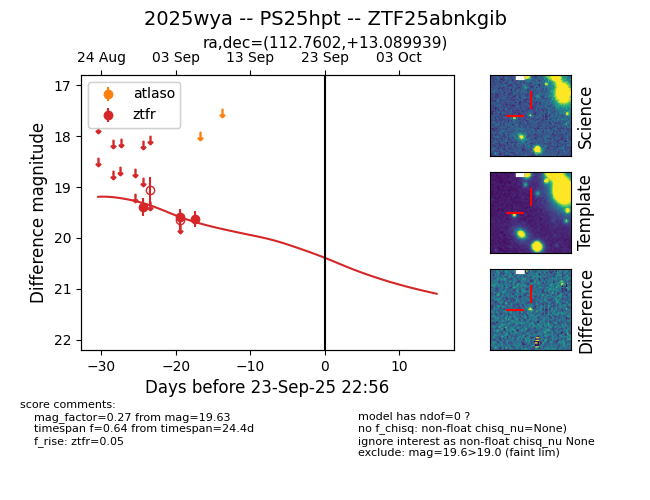
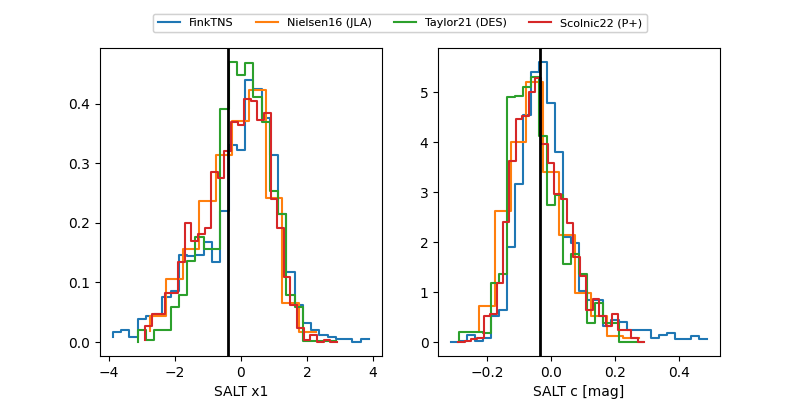

FINK: ZTF25abnkgib
Lasair: ZTF25abnkgib
ALeRCE: ZTF25abnkgib
TNS: 2025wya
YSE: 2025wya
ZTF25abnkgib (ztf,fink)
2025wya (tns,yse)
PS25hpt (panstarrs)
equatorial (ra, dec) = (112.7602,+13.08994)
galactic (l, b) = (205.4978,+14.61489)


last ztfr=19.63
3 ztfr detections